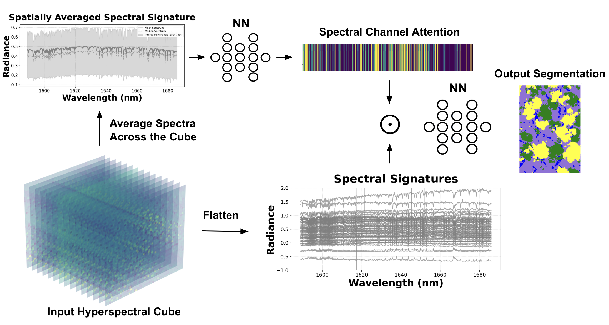

images/xch4_maps.pngSide-by-side XCH₄ maps: MethaneAIR (10 m) vs. MethaneSAT (45 m)Overview
Methane (CH4) traps roughly 80× more heat than CO2 over its first two decades in the atmosphere, and the oil & gas sector accounts for about a third of human-caused emissions. MethaneSAT (launched 2024) was built to quantify these emissions across wide ~220 × 220 km basins, complementing its higher-resolution airborne precursor MethaneAIR. Both retrieve column-averaged methane (XCH4) from hundreds of narrow bands of reflected sunlight.
During a Postbaccalaureate Fellowship with AstroAI at the Center for Astrophysics | Harvard & Smithsonian, in collaboration with the Environmental Defense Fund and Harvard University, I built the machine-learning methods needed to make that data usable. The work followed two threads: (1) masking clouds and their shadows, which corrupt the retrieval, and (2) detecting and segmenting the methane plumes that turn the maps into emissions estimates. This page collects the resulting papers, posters, data, and code.
Cloud & Shadow Segmentation
Clouds hide the surface and shadows starve it of light, biasing the methane retrieval; both must be masked before the data can be trusted. Conventional cloud detection treats every wavelength equally, ignoring the rich spectral structure of hyperspectral imagery, where clouds, shadows, and dark surfaces each leave a distinctive fingerprint across the bands.
We introduced SCAN (Spectral Channel Attention Network), which applies channel-wise attention directly to the physical spectral bands rather than to spatial feature maps: it averages the spectrum over a scene, learns a weight for every wavelength, and re-emphasizes the most discriminative bands before classifying each pixel as background, cloud, or shadow. It is a small, fast model built specifically for spectral data.

images/scan_architecture.pngSCAN schematic (Fig. 3 of the NeurIPS paper)Across six models benchmarked per sensor, two results stand out. SCAN's spectral attention pays off most on the satellite data, where it surpasses U-Net (particularly on shadows and dark surfaces), while U-Net better captures cloud shape. The two are strongest combined: a lightweight ensemble, the Combined CNN, wins on both sensors at under 0.2M parameters and roughly 4 ms of inference per 1,000 km².
| Model | MethaneAIR F1 | MethaneSAT F1 |
|---|---|---|
| ILR (baseline) | 62.1 | 64.4 |
| MLP | 71.3 | 67.1 |
| U-Net | 76.2 | 68.6 |
| SCAN | 75.0 | 71.5 |
| Combined CNN | 78.5 | 78.8 |
Published in IEEE TGRS (2026); the SCAN method was presented at the NeurIPS 2025 workshop on Tackling Climate Change with ML.
Methane Plume Segmentation
With clean maps in hand, the second thread outlined individual plumes so each can be attributed to a source and quantified. This became urgent when MethaneSAT lost contact in 2025, ending the mission early. The goal shifted to extracting maximum value from the ~14 months of data already collected, which required automating detection across the full archive. The obstacle: only 27 satellite scenes carried validated plume labels, far too few to train a modern model from scratch. We addressed this with two ideas.
1 · Cross-sensor transfer learning
Because MethaneAIR and MethaneSAT share the same retrieval physics, plume shapes look alike across them despite the resolution gap. We pre-trained an instance-segmentation model (Mask R-CNN with a ResNet-50 backbone, which beat U-Net and transformer variants) on the data-rich airborne scenes, then adapted it to the satellite. Of the strategies tried (joint training, curriculum learning, and fine-tuning), fine-tuning won, raising scene-level F1 from 0.35 (satellite-only) to 0.74 with essentially no missed plumes.
2 · Physics-informed postprocessing
Raw detections contain artifacts, and different users need different things. Physics-aware cleanup exposes two operating modes from the same model: a high-sensitivity mode (morphological shape filtering and proximity merging) that catches almost everything, and a high-precision mode (a statistical false-plume classifier over each mask's methane and albedo distribution) that suppresses nearly all false positives.
| Operating mode | Precision | Recall | F1 |
|---|---|---|---|
| Baseline | 0.60 | 0.98 | 0.74 |
| High sensitivity | 0.71 | 0.94 | 0.81 |
| High precision | 0.92 | 0.70 | 0.79 |

images/plume_pipeline.pngFive-step pipeline (Fig. 3 of the preprint)Available as a preprint (2026, submitted to IEEE TGRS); presented as posters at AGU 2025 and the AstroAI 2026 workshop.
Publications & Posters
Recorded Talks
Data & Code
Both projects are fully reproducible. Labeled hyperspectral imagery, trained model checkpoints, and the complete training and inference pipelines are released openly on Harvard Dataverse.
- Cloud & shadow segmentation. Imagery, checkpoints, and code (ILR, MLP, U-Net, SCAN, ensembles) with containerized reproducibility: doi:10.7910/DVN/IKLZOJ
- Plume segmentation. XCH₄ imagery, Mask R-CNN and transfer-learning pipelines, physics-informed postprocessing, and the trained false-plume classifier: doi:10.7910/DVN/FR959H
BibTeX
@article{perezcarrasco2026clouds,
author={Pérez-Carrasco, Manuel and Nasr, Maya and Roche, Sébastien and Miller,
Christopher Chan and Zhang, Zhan and Park, Core Francisco and Walker, Eleanor and
Garraffo, Cecilia and Finkbeiner, Douglas and Ayvazov, Sasha and Franklin, Jonathan E. and
Luo, Bingkun and Liu, Xiong and Gautam, Ritesh and Wofsy, Steven C.},
journal={IEEE Transactions on Geoscience and Remote Sensing},
title={Deep Learning for Clouds and Cloud Shadow Segmentation in
Methane Satellite and Airborne Imaging Spectroscopy},
year={2026},
volume={64},
pages={1-20},
doi={10.1109/TGRS.2026.3672371},
}
@article{perezcarrasco2026plumes,
title = {Plume Segmentation from MethaneSAT with Cross-Sensor Transfer Learning and
Physics-Informed Postprocessing},
author = {Manuel Pérez-Carrasco and Maya Nasr and Zhan Zhang and Apisada Chulakadabba and
Javier Roger and Raia Ottenheimer and Sébastien Roche and Maryann Sargent and
Chris Chan Miller and Daniel Varon and Jack Warren and Luis Guanter and
Kang Sun and Jonathan Franklin and Jia Chen and Cecilia Garraffo
and Xiong Liu and Ritesh Gautam and Steven Wofsy},
year = {2026},
eprint = {2605.24273},
archivePrefix = {arXiv},
primaryClass = {cs.CV},
url = {https://arxiv.org/abs/2605.24273},
}